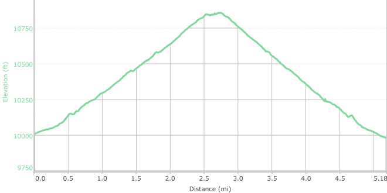
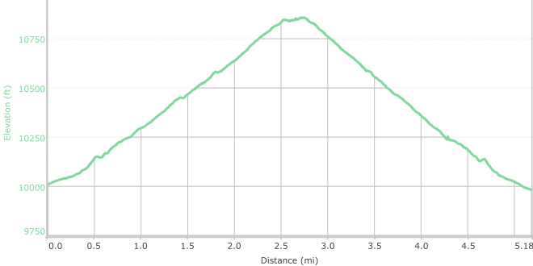

Hike New Mexico
w/ Tom & Ken
Aspen Vista Trail
| Difficulty | Round-trip | Type | Elev. Chg. | Exposure | Wow Factor | Facilities | Seasons | Flickr | Get There |
|---|---|---|---|---|---|---|---|---|---|
| Easy-medium | 5.2 miles | Out-and-back | 800 ft | Full sun | Autumn views | Parking Lot | Not Winter | Album | Directions |


 

- Oct 20, 2013: Aspen Vista Trail provides exceptional beauty
- Oct 1, 2015: The autumn tour bunch
- Sep 19, 2014: A quiet corner on the trail
- Oct 20, 2013: The sky at 10,000 ft is unbelievable!
- Sep 30, 2014: The rolling hills are alive with color
- Oct 1, 2015: Walk with a view
- https://www.flickr.com/photos/139088815@N08/27371839734/in/album-72157667627609484
- https://www.flickr.com/photos/139088815@N08/27705009060/in/album-72157667627609484
- https://www.flickr.com/photos/139088815@N08/27907136661/in/album-72157667627609484
- https://www.flickr.com/photos/139088815@N08/27907162101/in/album-72157667627609484
- https://www.flickr.com/photos/139088815@N08/27371054963/in/album-72157667627609484
- https://www.flickr.com/photos/139088815@N08/27705020410/in/album-72157667627609484
This is a very popular hike in the Santa Fe area, and particularly so in the fall. The normally ample parking is overwhelmed at peak fall season when the golden aspens are in full display. The trail is actually an old forest road, and if followed to its end goes approximately 11 miles, with significant altitude gain. As an out-and-back trail, it is not necessary to go too far to see the brilliant display of fall colors. At over 10,000 ft, the air is clean and the sky is blue, and the hike is actually rewarding at any time of year.